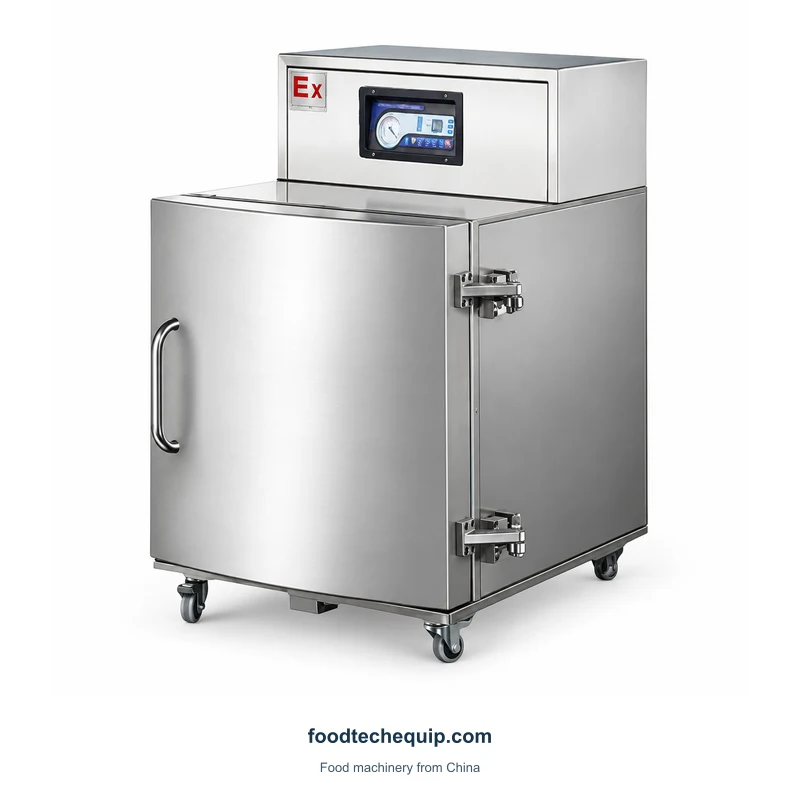

การบรรจุสุญญากาศ
เครื่องบรรจุสุญญากาศแบบดูดจากภายนอกแนวตั้ง
เครื่องบรรจุสุญญากาศแบบดูดจากภายนอกแนวตั้ง พร้อมโต๊ะลูกกลิ้งรองบรรจุภัณฑ์ที่จุดทำงาน
ดูอุปกรณ์เปรียบเทียบรูปแบบโดยใช้ถุงที่เต็มไปด้วยรวมทั้งถาดหรือการสนับสนุนใด ๆ สําหรับเครื่องห้องตรวจสอบพื้นที่ทํางานรอบ ๆ แพ็ค สําหรับซีลภายนอกให้ตรวจสอบว่ากระเป๋ารองรับที่แถบซีลอย่างไร จากนั้นเปรียบเทียบการเข้าถึงการโหลดและวิธีการที่แพ็คสําเร็จรูปจะถูกลบออก
เครื่องบรรจุสุญญากาศแบบดูดจากภายนอกแนวตั้ง พร้อมโต๊ะลูกกลิ้งรองบรรจุภัณฑ์ที่จุดทำงาน
ดูอุปกรณ์
เครื่องบรรจุสุญญากาศแบบตั้งพื้นพร้อมโต๊ะรองด้านหน้าและแถบซีลด้านบน
ดูอุปกรณ์
เครื่องบรรจุสุญญากาศแบบตั้งโต๊ะ พร้อมพื้นที่รองรับด้านหน้าและชุดควบคุมด้านบน
ดูอุปกรณ์
เครื่องบรรจุสุญญากาศแบบดูดจากภายนอกชนิดปรับเอียง ติดตั้งบนตู้มีล้อ
ดูอุปกรณ์
เครื่องบรรจุสุญญากาศแบบตู้สำหรับถุงข้าวและธัญพืช
ดูอุปกรณ์
เครื่องบรรจุภัณฑ์สูญญากาศภายนอกปรับความสูงได้พร้อมส่วนงานด้านหน้า
ดูอุปกรณ์
เครื่องบรรจุสูญญากาศภายนอกพร้อมลิฟท์แนวตั้งและแถบปิดผนึกด้านหน้า
ดูอุปกรณ์
เครื่องบรรจุภัณฑ์สูญญากาศภายนอกตรง เปรียบเทียบ QDZ-600F และ VS600 การจัดอันดับไฟฟ้าก่อนที่จะขอใบเสนอราคา
ดูอุปกรณ์
เครื่องบรรจุสูญญากาศภายนอกพร้อมชุดยกและส่วนปิดผนึกด้านหน้าสําหรับถุงพลาสติก แรงดันไฟฟ้าที่ระบุคือ 380 V
ดูอุปกรณ์
เครื่องบรรจุสุญญากาศแบบสองห้อง มีพื้นที่ทำงานสองส่วนและฝาเคลื่อนย้ายได้
ดูอุปกรณ์
เครื่องบรรจุสุญญากาศแบบห้องเดียว พร้อมฝาโปร่งใสและชุดควบคุมด้านหน้า
ดูอุปกรณ์
เครื่องบรรจุสุญญากาศแบบดูดจากภายนอกชนิดตั้งโต๊ะ พร้อมชุดซีลด้านหน้าและพื้นที่รองรับ
ดูอุปกรณ์
เครื่องบรรจุสุญญากาศแบบดูดจากภายนอก มีชุดแนวตั้งและชุดยกให้เปรียบเทียบ
ดูอุปกรณ์
เครื่องบรรจุสูญญากาศภายนอกแบบตั้งพื้นพร้อมชุดยกและส่วนปิดผนึกด้านหน้า
ดูอุปกรณ์
ตู้สูญญากาศเครื่องบรรจุภัณฑ์ที่มีประตูห้องด้านหน้าและการควบคุมบน
ดูอุปกรณ์
เครื่องบรรจุสุญญากาศแบบสายพานต่อเนื่อง พร้อมสายพานป้อน ฝาห้องสุญญากาศ และชุดควบคุมที่ยกสูง
ดูอุปกรณ์
เครื่องบรรจุสูญญากาศตู้โหลดด้านหน้าพร้อมตัวควบคุมส่วนบนและปลอกเครื่องสแตนเลส
ดูอุปกรณ์
เครื่องบรรจุภัณฑ์สูญญากาศอัดที่มีกรอบเหนือศีรษะกระบอกสูบนิวเมติกและฐานตู้
ดูอุปกรณ์
เครื่องบรรจุสูญญากาศภายนอกแบบตรงพร้อมการสนับสนุนที่ปรับได้สําหรับถุงพลาสติก น้ําหนักเครื่องที่ระบุไว้คือ 100 kg
ดูอุปกรณ์
เครื่องบรรจุภัณฑ์สูญญากาศการบีบอัดที่มีเฟรมนิวเมติกเหนือศีรษะ
ดูอุปกรณ์ลองใช้คําหลักอื่นหรือล้างตัวกรองของคุณ
สําหรับรูปแบบห้องให้ขนาดผลิตภัณฑ์ถุงทั้งหมดและการจัดเรียงการโหลด สําหรับรูปแบบภายนอกอธิบายการสนับสนุนที่ตําแหน่งการปิดผนึก
ให้การก่อสร้างถุงและความต้องการซีลพร้อมกับตัวอย่างแพ็คจริง พูดคุยเกี่ยวกับข้อกําหนดเกี่ยวกับอายุการเก็บรักษาของผลิตภัณฑ์ใด ๆ เป็นส่วนหนึ่งของกระบวนการผลิตภัณฑ์และบรรจุภัณฑ์ที่กว้างขึ้น
| เลือกพื้นที่ | เกณฑ์เปรียบเทียบ | สิ่งที่จะให้ |
|---|---|---|
| ห้อง | แพคเกจที่สมบูรณ์ภายในพื้นที่ทํางาน | บรรจุซองจดหมายและรูปแบบการโหลด |
| ด้านนอก | สนับสนุนนอกส่วนปิดผนึก | ปากถุงและความสูงสนับสนุน |
| เข็มขัดหรือตู้ | การเข้าถึงและการถ่ายโอนแพคเกจ | ระยะห่าง, การโหลดและลําดับการเก็บ |
ตรวจว่าถุงหลังบรรจุพอดีกับพื้นที่ทำงานและมีที่รองรับขณะป้อน ระบุขนาดโดยรวม รูปปากถุง และแนวซีลที่ต้องการ หากใช้เครื่องปิดถุงแยก ให้ระบุเป็นอีกขั้นของกระบวนการ